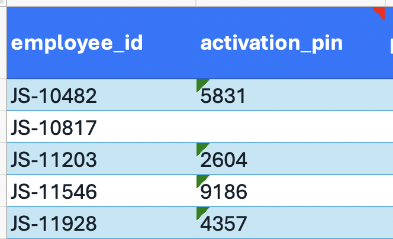
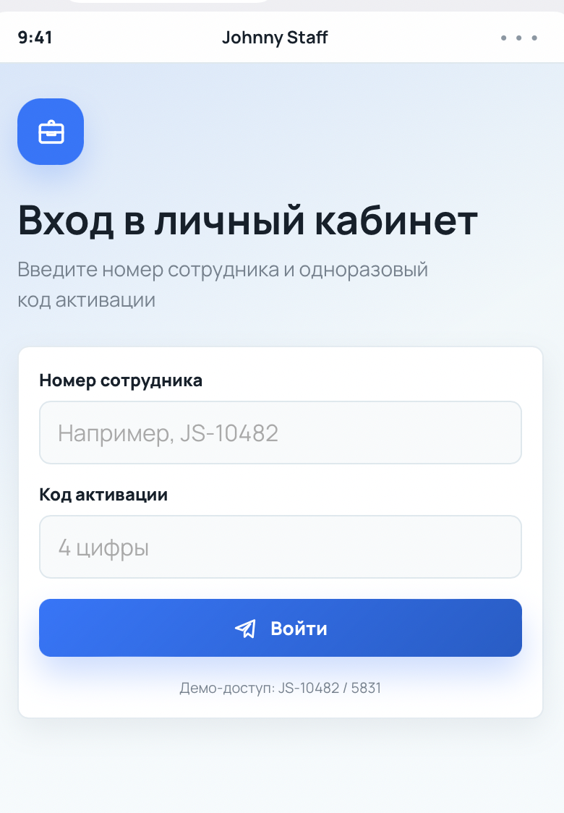

◎
OpenAIAI-модель
работает через
>_
CodexAI-агент
Начнём с главного
Вайбкодинг — это способ создавать сайты, приложения и сервисы с помощью ИИ, не зная программирование на глубоком уровне.
Вы описываете идею обычными словами, а AI-помощник превращает её в работающий код. Ваша задача — поставить цель, дать контекст и проверить результат.
Где можно вайбкодить
Оба инструмента умеют работать с кодом, но подходят к задаче немного по-разному.
Полноценная разработка, работа с существующим проектом, GitHub, исправление ошибок
Тем, кто делает реальные продукты
Архитектура, чистый код и рефакторинг больших проектов
Тем, кто уже немного работает с кодом
Разбираемся наглядно
Самостоятельный агент, который может пройти весь путь от задачи до работающего результата.
«Создай Telegram Mini App для страховой компании, подключи авторизацию, сделай личный кабинет, оформи дизайн и закоммить изменения».
Codex способен выполнить почти весь этот процесс как агент.
Больше похож на очень сильного senior-разработчика: аккуратного, вдумчивого и внимательного к структуре.
«Переделай архитектуру моего проекта».
Claude часто делает это очень аккуратно.
Codex — когда нужно сделать продукт. Claude Code — когда нужно особенно тщательно проработать код и архитектуру.
От идеи к своему продукту
Почти любой цифровой продукт можно начать с понятного запроса. Выберите формат — Codex поможет продумать интерфейс, написать код, подключить функции и довести проект до рабочей версии.
Приложение прямо внутри Telegram
График, документы, заявки на отпуск, новости команды и связь с HR — в одном приложении.
Для компанииБаллы, персональные предложения, запись на услуги и история покупок для клиентов бренда.
Для бизнесаПрограмма, карта площадки, билеты, знакомства участников и моментальные уведомления.
Для событийМини-анкета, подходящие объекты, расчёт платежа и быстрая запись на просмотр.
Для продажСтатусы проекта, согласование этапов, файлы и оплата для клиентов студии или фрилансера.
Для услугСервисы, которые думают вместе с человеком
Анализирует фото, предлагает образы под задачу и помогает подобрать вещи из каталога.
Для fashionСоздаёт идеи, рубрики и черновики постов на основе ниши, цели и голоса бренда.
Для экспертовПревращает опыт человека в сильное резюме, сопроводительное письмо и персональную страницу.
Для карьерыОбъясняет сложные договоры и инструкции простыми словами, выделяет главное и собирает чек-лист.
Для жизниСтроит маршрут по бюджету и интересам, собирает места, даты и план каждого дня.
Для путешествийПубличная точка входа в ваш продукт
Упаковывает услуги, кейсы и отзывы, отвечает на вопросы и приводит клиента к заявке.
Для личного брендаПрограмма курса, личный кабинет, уроки, домашние задания и отслеживание прогресса.
Для обученияКрасиво показывает коллекцию, помогает выбрать товар и переводит к покупке или консультации.
Для продуктаАнонс, программа, спикеры, регистрация и ответы на все вопросы участников.
Для запускаРассказывает о компании и команде, показывает кейсы, собирает вакансии и обращения клиентов.
Для компанииНе обязательно сразу строить огромный сервис. Начните с одной полезной функции — и превратите её в первую рабочую версию продукта.
Практика: Telegram Mini App
Сейчас мы подробно разберём один формат — приложение, которое открывается прямо внутри Telegram. Хороший первый запрос должен описать не только экраны, но и пользователей, сценарии, данные и ожидаемый результат.
Ниже — универсальная основа для большинства Mini Apps.Ты — продуктовый дизайнер и full-stack разработчик. Создай полноценный Telegram Mini App [название или тема приложения].
Контекст и цель. Приложение создаётся для [компания / эксперт / сообщество / проект]. Его цель — помочь [кому] [решить задачу или получить результат].
Пользователи и роли. Основные пользователи: [клиенты / сотрудники / участники / администраторы]. Предусмотри роли [перечислить роли].
Главный сценарий. После входа человек должен: [шаг 1] → [шаг 2] → [шаг 3 — конечный результат]. Сделай путь коротким, понятным и без лишних действий.
Экраны и функции. Нужны: [главная], [каталог или список], [карточка объекта], [профиль], [заявки / история / избранное]. Пользователь может [просматривать / искать / создавать заявку / редактировать данные].
Важно: сначала создай простую первую версию без сложных интеграций. Запусти проект, проверь основной сценарий и исправь ошибки.
Теперь добавь логику данных и доступа. Опиши, как приложение понимает, кто зашёл: через [Telegram ID / внутренний ID сотрудника / номер телефона / почту / SSO].
Если это приложение для сотрудников: проверь пользователя по Google Sheet, CRM или базе сотрудников и покажи только его данные.
Если это магазин или открытый сервис: создай форму регистрации. Пользователь может ввести email, телефон или открыть Mini App через Telegram. Новые данные пользователя должны сохраняться в [Google Sheets / CRM / базе данных].
Если нужен код подтверждения: объясни, кто его отправляет — backend через email-сервис, SMS-сервис или Telegram-бота.
API простыми словами: API — это “мостик” между приложением и другим сервисом. Попроси Codex подключить [Google Sheets / CRM / онлайн-школу / склад / рассылки / AI], чтобы приложение само брало оттуда данные или отправляло туда новые заявки.
Оплата: если есть покупка, добавь кнопку [Купить / Оплатить / Заказать] и подключи готовую платёжную ссылку [Robokassa / Stripe / ЮKassa / CloudPayments / GetCourse].
Проверь, что это именно формат приложения на телефон: mobile-first Telegram Mini App, а не обычная desktop-страница для ПК.
Если интерфейс получился слишком широким или похожим на сайт для компьютера, исправь его: сделай узкую мобильную ширину, крупные кнопки, удобные поля ввода и навигацию под экран телефона.
Дизайн и UX. Стиль: [современный / минималистичный / премиальный / яркий]. Цвета: [палитра]. Референсы: [ссылки или описание]. Интерфейс должен быть удобным внутри Telegram.
Используй Telegram WebApp SDK, учитывай светлую и тёмную тему Telegram, не оставляй неработающих кнопок и демонстрационных заглушек в основном сценарии.
В финале подготовь проект для GitHub и хостинга, добавь понятный README и кратко напиши: что реализовано, как запустить приложение и что логично добавить во второй версии.
Сначала создайте один главный рабочий сценарий, а затем добавляйте новые роли, интеграции и функции. Так Codex быстрее соберёт устойчивую первую версию.
Пользователи, роли и доступ
Авторизация отвечает на два вопроса: кто вошёл и что этому человеку можно показывать. В Telegram личность пользователя уже известна, но приложение должно безопасно проверить эти данные на сервере и сопоставить их с сотрудником или клиентом.
В CRM, базе или закрытой Google Таблице заранее есть сотрудник: внутренний ID, имя, должность, роль и статус.
При первом входе он вводит внутренний номер и одноразовый код из письма или приглашения.
Backend проверяет данные и привязывает к карточке проверенный числовой Telegram ID.
При следующих входах кабинет открывается автоматически, а информация загружается по роли сотрудника.
Если у клиента уже есть Google Таблица, не обязательно сразу переносить всё в сложную CRM. В таблице можно хранить ID сотрудника, код активации, роль, статус, товары, заявки или любые другие рабочие данные.
Сотрудник открывает Mini App, вводит свой номер и код. Backend проверяет эти данные в таблице, привязывает доступ к его Telegram ID и показывает только ту информацию, которая относится к этому сотруднику.


Нужно создать форму регистрации: пользователь вводит email, телефон или открывает Mini App через Telegram.
Backend создаёт нового пользователя: сохраняет email, телефон, Telegram ID, дату регистрации и статус клиента.
Эти данные можно автоматически отправлять в Google Таблицу, CRM или базу данных — чтобы менеджер сразу видел нового пользователя.
Если нужен код подтверждения, его отправляет backend через email-сервис, SMS-сервис или Telegram-бота. Пользователь вводит код и получает доступ.
Ученик получает доступ после оплаты, от преподавателя или от администратора: код, ссылку-приглашение или QR-код.
При первом входе приложение проверяет код и привязывает доступ к Telegram ID конкретного ученика.
Дальше ученик видит только свои уроки, материалы, домашние задания, прогресс или закрытые разделы клуба.
Если оплата проходит в GetCourse, Robokassa, Stripe или другой системе, приложение может открывать готовую ссылку оплаты, а доступ выдавать после подтверждения.
«Добавь кнопку оплаты и подключи готовую ссылку на товар из Robokassa / Stripe / ЮKassa / CloudPayments / GetCourse».
«Подключи мой сервис по API: отправляй заявки в CRM, забирай статусы заказов или подтягивай уроки из онлайн-школы».
«Сохраняй пользователей, заявки и заказы в Google Sheets, CRM или базе данных — выбери самый простой вариант для MVP».
Публикуем проект в интернете
Для публикации нам понадобятся три разных инструмента. Они не заменяют друг друга: один хранит код, второй запускает проект, третий даёт ему красивый адрес.
Хранит проект и всю историю изменений.
$0Запускает код и делает проект доступным онлайн.
от $0Регистрирует собственное имя сайта.
≈ $11 / годПроект хранится в репозитории. Можно видеть каждое изменение, вернуться к старой версии, работать вместе и подключить автоматическую публикацию.
App Platform подключается к GitHub, собирает приложение, выдаёт интернет-адрес и автоматически публикует новые версии после обновления кода.
Домен — это адрес вроде mybrand.com. Он нужен, если вы не хотите использовать техническую ссылку хостинга. Сам домен не хранит сайт.
Создаём репозиторий и сохраняем проект.
Выбираем репозиторий и нажимаем Deploy.
DigitalOcean выдаёт готовый адрес с HTTPS.
Покупаем имя в Namecheap и настраиваем DNS.